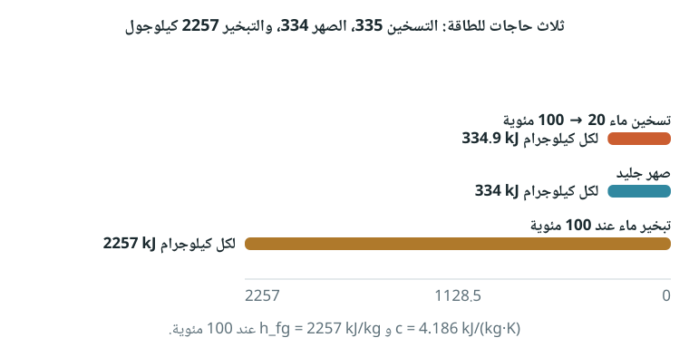

لماذا ينقل البخار حرارة إضافية عند تكثّفه؟
Why steam burns worse than boiling water
عندما يتكثف بخار الماء، يطلق الحرارة الكامنة التي امتصها أثناء التبخر. يوضح المقال مقدار هذه الطاقة لكل كيلوغرام عند الضغط الجوي القياسي.
الطاقة التي تأخذها المادة لتسخينها تُحسب بضرب الكتلة في الحرارة النوعية في فرق الحرارة. للماء 4.186 كيلوجول لكل كيلوجرام وكلفن، فحرارة كيلوجرام من 20 إلى 100 مئوية تستهلك 334.9 كيلوجول. لكن تحويل الماء السائل إلى بخار عند 100 مئوية يستهلك 2257 كيلوجول بلا أي زيادة في الحرارة إطلاقاً: الطاقة تذهب إلى كسر الروابط لا إلى رفع الترمومتر. هذه الحرارة الكامنة هي سبب خطورة البخار: حين يتكثّف على الجلد يعيد 2257 كيلوجول لكل كيلوجرام مرة واحدة، أي ما يعادل سقوط الماء من ارتفاع 230 متراً. ولهذا أيضاً يُستخدم البخار ناقلاً للحرارة في المصانع: كيلوجرام واحد ينقل ما ينقله 6.7 كيلوجرامات من الماء الساخن عند نفس الفرق الحراري.
كيف تعمل الظاهرة؟
في التسخين المحسوس تزداد حركة الجزيئات ويرتفع الترمومتر. عند نقطة الغليان تُستهلك الطاقة في التغلّب على قوى التجاذب بين الجزيئات لفصلها إلى غاز، فتبقى الحرارة ثابتة أثناء التبخّر. عند التكثّف يحدث العكس تماماً: الطاقة المُخزّنة تُحرَّر دفعة واحدة في السطح الذي يتكثّف عليه.
العلاقة بالأرقام
q = m·c·ΔT = 1 × 4.186 × 80 = 334.9 كيلوجول للتسخين، و q = m·h_fg = 1 × 2257 = 2257 كيلوجول للتبخّر. النسبة 6.74. وللمقارنة، صهر كيلوجرام جليد يكلّف 334 كيلوجول — أي أن حرارة صهر الجليد تعادل تقريباً كل طاقة تسخين الماء 80 كلفناً.
مفاهيم متقاربة
الحرارة النوعية تصف رفع الحرارة داخل الطور، والحرارة الكامنة تصف تغيير الطور بلا تغيّر في الحرارة. خلطهما ينتج أخطاء تصميم شائعة: حساب مبادل بخاري كأنه مبادل ماء ساخن يقلّل مساحة التبادل إلى سُدس المساحة الصحيحة.
حدود التطبيق
2257 كيلوجول/كيلوجرام قيمة عند 100 مئوية وضغط جوي؛ تنخفض مع ارتفاع الحرارة (نحو 2000 عند 180 مئوية). والقيم هنا لماء نقي؛ الأملاح والشوائب تغيّرها قليلاً. كما أن الحرق الفعلي يعتمد على زمن التلامس ومساحة السطح، لا على الطاقة وحدها.

| الكمية | القيمة | المصدر |
|---|---|---|
| طاقة تسخين 1 كجم ماء من 20 إلى 100 مئوية | 334.9 kJ | [1] |
| الحرارة الكامنة لتبخّر 1 كجم عند 100 مئوية | 2257 kJ | [2] |
| نسبة طاقة التبخير إلى طاقة التسخين 20–100 | 6.74 × | [1] |
| الحرارة الكامنة لصهر 1 كجم جليد | 334 kJ | [1] |
المصادر
- 1 OpenStax, College Physics 2e — Temperature Change and Heat Capacity — OpenStax. openstax.org/books/college-physics-2e/pages/14-2-temperature-change-and-heat-capacity · اطُّلع عليه 2026-11-16
- 2 NASA Glenn — Enthalpy — NASA. www1.grc.nasa.gov/beginners-guide-to-aeronautics/enthalpy-2-2/ · اطُّلع عليه 2026-11-16
راجعه: مراجعة آلية — ديوان المعرفة (أرقام محسوبة + مصادر متحققة) 2026-11-16 · 2026-11-16 · آخر تحديث 2026-11-17
رجوع إلى المقالات